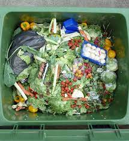
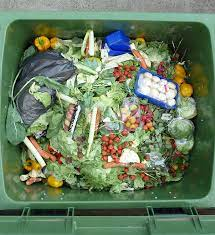

Food that is improperly stored is not consumed before it spoils. Lack of visibility in refrigerators, half used components, and incorrect estimation of food needs are all causes of food spoiling at home. Cooking or serving too much food is over-preparation. Over time, cooking amounts have expanded, and huge dinners frequently contain more food than can be consumed. Additionally, a lot of people wind up tossing away leftovers because they forget to consume them. Large Portions: A regular occurrence at restaurants, larger portions significantly increase food waste. Unfinished restaurant dinners and eatable leftovers are frequently left behind. Buffets that are all-you-can-eat are especially wasteful because leftover food cannot legally be donated or repurposed because of health code regulations.
The environmental impacts of food wastage are that waste food releases methane into the atmosphere when they are rotting in the landfills which leads to a surge in climate change, which results in a variety of issues becoming dangerous. The economic impacts of food wastage are that one third of all food generated is wasted by humans all over the world every year, and to process that food requires around a trillion USD which is causing a loss for the economy of every country. The health impacts are that the food wasted could have been used to feed more mouths across the world which would have helped us fight the issue of world hunger, but since it is wasted, there is a lower supply of food and a higher demand because of the world population which leads to malnourishment, diseases and even death.
 
